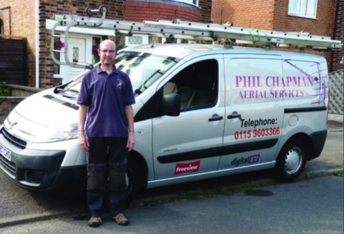

Excellent Service
“I heartily recommend Phil! He arrived when he said he would and did a great job fitting two aerials for us. Excellent service - polite, efficient and professional.”
SusanjaneK15 February 2024
TV AERIALS · SATELLITE · NOTTINGHAM
We can help with TV aerial installation and repairs, satellite and radio aerials, reception problems and TV set-up across Nottingham and nearby areas.
We offer free quotes and advice. Call and tell us what you need help with.
Family-run since 1961 Nottingham and surrounding areas

SERVICES
Whether you need a new aerial, a repair or help with reception, we can offer straightforward advice and a free quote.
We can help with Freeview and YouView aerial installation and set-up.
Ask us about dish installation, upgrades, set-up and fault finding.
We can help diagnose and repair faults with aerials and satellite dishes.
We can help investigate weak, interrupted or unreliable TV reception.
We can help with an FM or DAB aerial for radio reception at home.
We can help with TV installation, wall mounting and equipment set-up.
CUSTOMER REVIEWS
Read customer reviews originally published on Yell.
“I heartily recommend Phil! He arrived when he said he would and did a great job fitting two aerials for us. Excellent service - polite, efficient and professional.”
SusanjaneK15 February 2024
“I am very impressed with the service that I received from Phil. He met every standard I want from a professional business. Prompt, efficient, polite, honest, respectful,tidy and provided an excellent job at a very reasonable price. Thank you Phil. I would recommend his work.”
JR-90829 November 2018
“Great communications, knowledgable and excellent customer service. A good job well done!”
RedBlanket58-26 March 2018
“I phoned for advice on an extension aerial. Phil arrived promptly the following morning as promised and after discussions on the best way forward, an amplifier was fitted and an aerial to an extension at the rear of the property. All at a very reasonable price. He was very courteous and removed his shoes each time when he entered the house. I can highly recommend him. I actually chose him on the 5 star reviews that were on the website!!”
RosemaryO-114 January 2016
Reviews reproduced as supplied and attributed to Yell. Visit Phil Chapman Aerial Services on Yell ↗
PHIL’S CUSTOMER PROMISE
“I won't leave a job until you are happy with the quality of the work undertaken and have a good understanding of how everything works.”More about Phil →
FREE QUOTES & ADVICE
Call Phil to discuss an aerial, satellite or television installation and ask for a free quote.